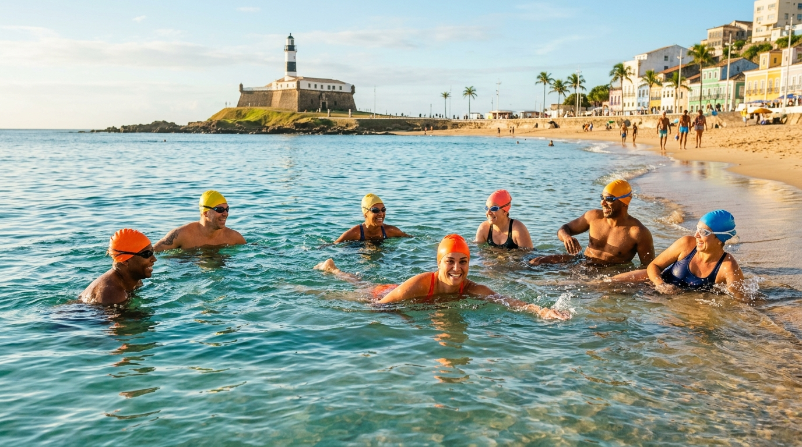
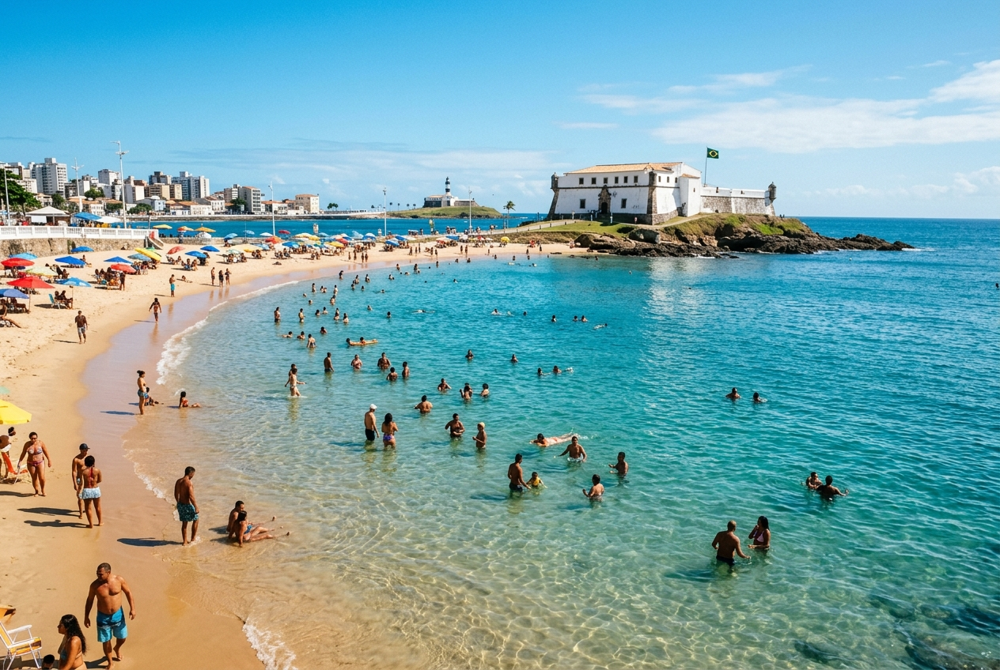
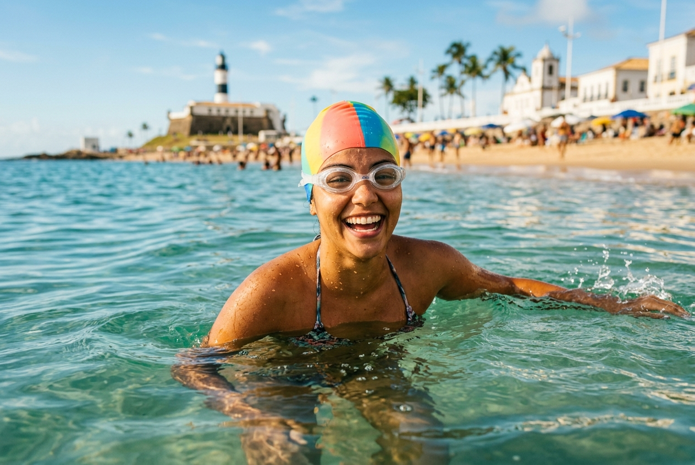
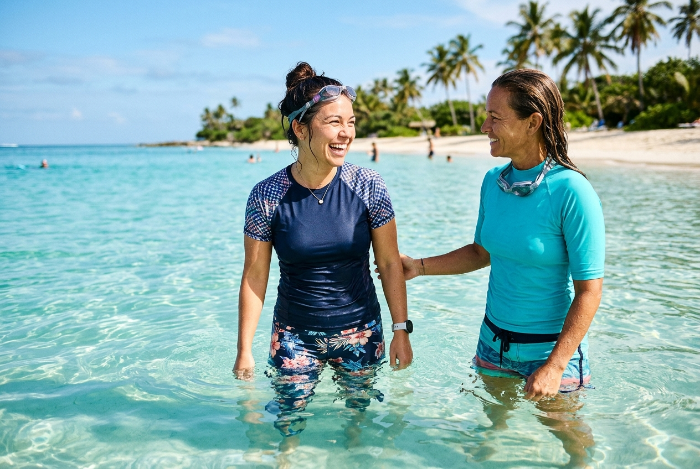
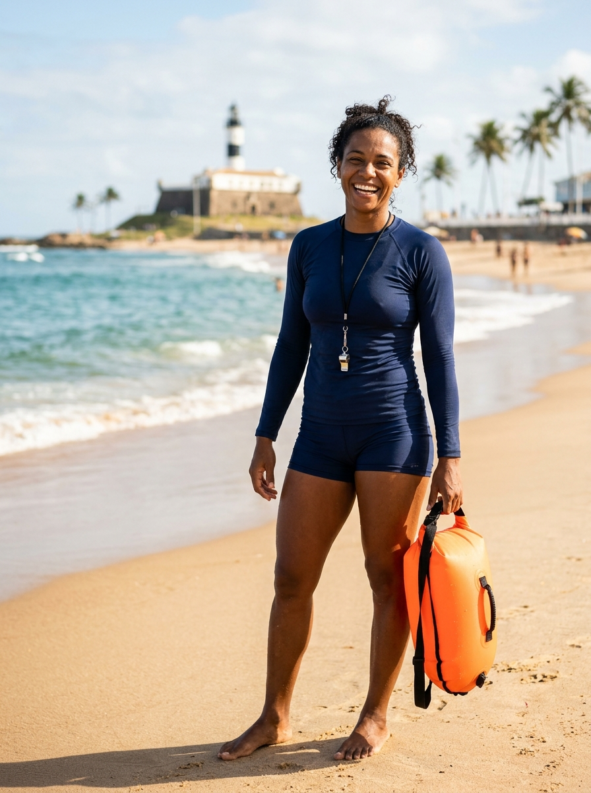

Aprenda a nadar no mar do absoluto zero.
Mesmo se tiver medo, vergonha ou trauma da água. A maior escola de natação em águas abertas da Bahia acolhe você no seu ritmo, com respeito e segurança.

Vem pro mar • Porto da Barra, Salvador/BA
Como funciona sua primeira aula no mar
Tudo foi pensado para você se sentir seguro e acolhido desde a primeira mensagem até o primeiro mergulho.
Chama no WhatsApp
Você clica no botão, fala com nossa equipe e conta sobre seu contato prévio com a água ou receios.
Escolhe a praia
Você escolhe entre as águas calmas de piscina natural do Porto da Barra ou a energia de Itapuã.
Chega e é acolhido
Nosso professor recebe você na areia, explica cada detalhe, coloca a boia de segurança e tira dúvidas.
Entra no seu ritmo
Você entra onde dá pé, no seu tempo. O professor permanece colado com você durante toda a vivência.
Se algum desses pensamentos já passou pela sua cabeça...
O medo do mar é comum e perfeitamente compreensível. O erro é achar que você precisa superá-lo sozinho antes de começar.
“Tenho pânico de não dar pé e perder o controle no fundo.”
Nossas primeiras aulas são todas realizadas na parte rasa onde dá pé com folga. Você nunca é forçado a ir para o fundo.
“Acho que não levo jeito para natação e vou passar vergonha.”
Aqui não existe cobrança por performance ou comparação. Cada aluno é acolhido com paciência e empatia baiana.
“Tenho vergonha de começar a aprender depois de adulto.”
A grande maioria do nosso cardume começou na fase adulta, dos 25 aos 70 anos. Nunca é tarde para fazer as pazes com o mar.
“Você não precisa chegar pronto, nem deixar de sentir medo para começar. O mar de Salvador é a nossa sala de aula mais generosa.”
Quero dar o meu primeiro passoOnde o mar acolhe você
Duas praias icônicas com características ideais para cada momento da sua evolução aquática.
Porto da Barra
Uma das baías mais protegidas e cristalinas do mundo. Sem ondas fortes, com temperatura agradável o ano inteiro e profundidade gradual. O local perfeito para quem está dando as primeiras braçadas.
- Água límpida e mar calmo sem correnteza forte
- Parte rasa extensa com apoio contínuo do professor
- Ponto de encontro: Confirmado no agendamento pelo WhatsApp

Praia de Itapuã
A mística praia cantada por Caymmi e Vinicius. Excelente para quem busca desenvolver resistência, sentir a amplitude das águas abertas e nadar sob a brisa fresca dos coqueirais baianos.
- Espaço amplo para nado contínuo e treinos em cardume
- Orientação constante com boias individuais de segurança
- Ponto de encontro: Confirmado no agendamento pelo WhatsApp
Ninguém nada sozinho no mar
No mar de Salvador, quem tem medo encontra apoio e quem já nada encontra parceria. Juntos formamos um cardume forte, seguro e acolhedor.
✨ Mova o cursor ou toque na tela para guiar o peixinho líder amarelo pelo oceano!

Sorriso e superação • 1ª aula

Apoio onde dá pé • Sem medo

Cardume unido • Porto da Barra

Confiança e respiração no mar

Alegria na praia pós-nado
Protocolos rigorosos para sua total tranquilidade
Você só consegue relaxar e aprender quando tem certeza de que está 100% protegido.
Boias de Salvamento Individuais
Uso de boias de flutuação de alta visibilidade presas à cintura. Se cansar ou sentir receio, basta apoiar-se na boia e descansar.
Instrutores Especializados
Professores capacitados em resgate aquático e primeiros socorros, mantendo proporção reduzida de alunos por instrutor.
Monitoramento das Marés
Aulas planejadas de acordo com as tábuas de marés da Marinha do Brasil e boletins meteorológicos em tempo real.
Treinamentos com LIGAPH e LIBAME
Nossa equipe participa de reciclagens técnicas e treinamentos integrados de salvamento aquático e atendimento pré-hospitalar com as entidades de referência LIGAPH e LIBAME.
Planos sob medida para o seu momento
Turmas com vagas reduzidas para garantir acompanhamento personalizado e segurança total na água.
Plano Mensal
Ideal para quem quer começar com flexibilidade e sentir a evolução no mar semana a semana.
- Aulas práticas semanais com professor ao lado
- Equipamentos de segurança e boia individual incluídos
- Acesso ao grupo oficial do Cardume no WhatsApp
- Grade de horários: Turmas matutinas e vespertinas
Plano Trimestral
O ciclo ideal para transformar de vez o medo em confiança plena e nado contínuo em águas abertas.
- Evolução pedagógica completa do zero ao mar aberto
- Desconto especial no pacote trimestral
- Flexibilidade de reposição de aulas em caso de mar mexido
- Grade de horários: Prioridade de vaga nas turmas
Vidas transformadas pelo mar de Salvador
Nossos novos depoimentos e registros em vídeo estão sendo reunidos e autorizados diretamente pelos alunos. Cada pessoa que entra na água com a Natação Fácil tem uma história singular de coragem.
Equipe especializada e acolhedora
Educadores apaixonados pelo mar e dedicados ao acolhimento de pessoas com medo ou que começam do zero.

Equipe de Instrução Técnica
Especialistas em Águas Abertas & Salvamento
Profissionais de Educação Física e resgate aquático com ampla vivência nas praias de Salvador. Credenciais e registros CREF confirmados no agendamento.
Falar com a equipe no WhatsApp →
Equipe de Apoio & Acolhimento
Adaptação Aquática & Superação do Medo
Focada em respiração consciente, equilíbrio na água e suporte psicológico para adultos que enfrentam traumas ou receios do mar.
Tirar dúvidas com os professores →Qual é a turma ideal para você no mar?
Responda em 30 segundos e receba a recomendação exata para seu nível pelo WhatsApp.
Qual praia você prefere para as suas aulas?
Você pode alternar ou escolher a mais conveniente para sua rotina.
Qual é a sua relação atual com o mar?
Seja sincero: todas as respostas são acolhidas com carinho!
Qual período do dia você prefere nadar?
Temos turmas em diferentes faixas de horário.
Turma ideal identificada!
Confira o resumo das suas preferências abaixo:
Perguntas Frequentes
Tudo o que você precisa saber para se sentir confiante antes do primeiro contato com a água.